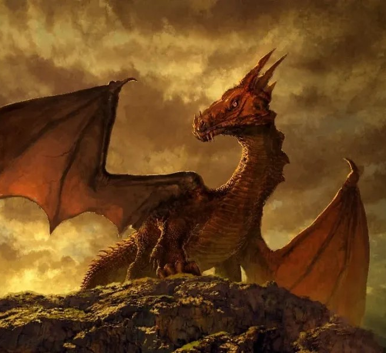
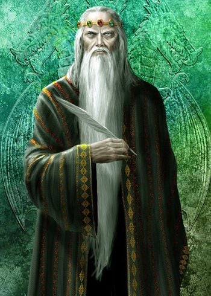

La historia de El Dragon
"El dragón" de Ray Bradbury es un relato corto que explora la intrincada relación entre la fantasía y la realidad. La historia sigue a un niño llamado Charles que, obsesionado con los dragones, crea un vínculo imaginario con uno de estos seres míticos. A medida que la conexión crece, los límites entre la realidad y la fantasía se difuminan, llevando a Charles a cuestionar la naturaleza de su propia existencia. Bradbury teje magistralmente la línea entre la inocencia infantil y la complejidad de la percepción, invitando a los lectores a reflexionar sobre la dualidad de la imaginación y la vida cotidiana.

Quien soy y como desarrolle el juego
Soy Fermín Milito, tengo 19 años y estudio Diseño Multimedial, el juego esta inspirado en el la historia "El Dragon" de Ray Bradbury, para hacer un juego divertido y dinámico se me ocurrio que poner al jugador en los pies del dragón lo haría más divertido, por este motivo al jugar ocupas ese rol y para ganar debes comer 15 pollos sin perder las 3 vidas que tenes, las vidas las perdes cada vez que te impacta una flecha. Hacer a colision entre el dragon y los distintos objetos fue el obstaculo mas dificil que tuve a la hora de programar el juego, pero finalmente pude lograrlo. Luego ya con todos los conocimientos orientados a objetos inclui el juego en la aventura grafica previamente, y en base a si ganas o perdes la historia tiene un desenlace distinto. Pero no te voy a contar mas, jugalo para enterarte que es lo que ocurre!